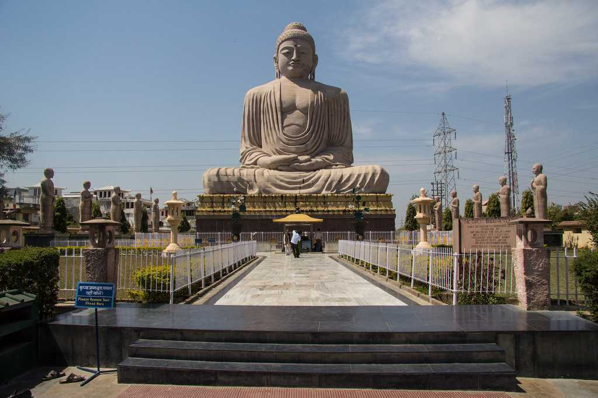
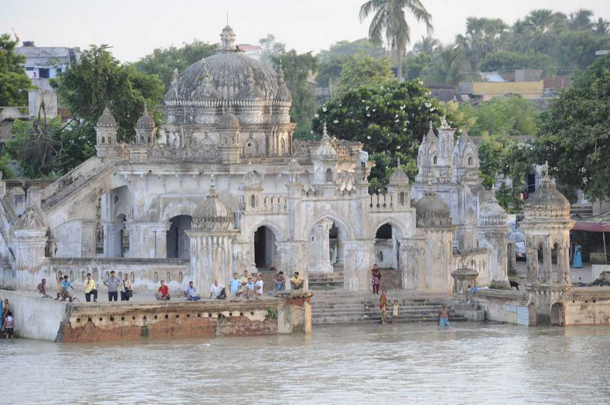

Bodh Gaya is a Buddhist pilgrimage site in Gaya District of Bihar. Famous for the Mahabodhi Temple, It was here under the Bodhi tree that Gautama Buddha attained enlightenment.
Prospering along the southern banks of river Ganges and set in the backdrop of a glorious historical past, Patna boasts of a dominating presence in history and enjoys the distinction of being one of the oldest cities in the world. In addition to being one of the major and most popular tourist destinations in India, this capital city of Bihar also holds significant religious and spiritual importance as it is a gateway to pilgrimage sites of Hindus, Sikhs, Jains and Buddhists.
Located in the West Champaran district, Valmiki National Park is situated on the India- Nepal border on the banks of river Gandak.
Situated in Rajnagar on the eastern bank of River Kamla, near Madhubani district of Bihar, Navlakha Palace, also known as Rajnagar Palace, is an ancient royal palace which is a popular heritage building in the region.

This historically significant city of Bhagalpur lies on the southern banks of the river Ganges. Bhagalpur, also known as the silk city, it is the 3rd largest city of Bihar.

One of the state’s 38 districts, Rohtas was formed after the division of Shahabad district into Rohtas and Bhojpur back in 1972.
Vaishali is one of the most popular tourist places in Bihar, being an important pilgrimage site for Jains and Buddhists from all over the world.

One of the most exciting architectural marvels coming up in Bihar is the Glass-Floor Bridge, a massive skywalk whose specialty is its transparent floor. The bridge is supposed to be around 85 feet in length and 6 feet wide.

Stemming from the center of a lush green garden, Golghar's stupa-shaped structure is an enticing sight to behold.
As its name suggests, the majestic Vishnupad Temple is dedicated to the Hindu god Lord Vishnu and houses a 40 cm long footprint of the Lord, which is sheltered by a silver plated basin.
Also referred to as Tutrahi and Tutla Dham, the postcard-perfect Tutla Bhawani Waterfall lies in the Rohtas district of Bihar.
Said to be the oldest university in the world, Nalanda University is amongst the earliest pioneers of learning. In addition to being a UNESCO World Heritage Site, the university has origins that date back to as early as the 3rd century, and the entire structure spreads across 14 hectares of land.